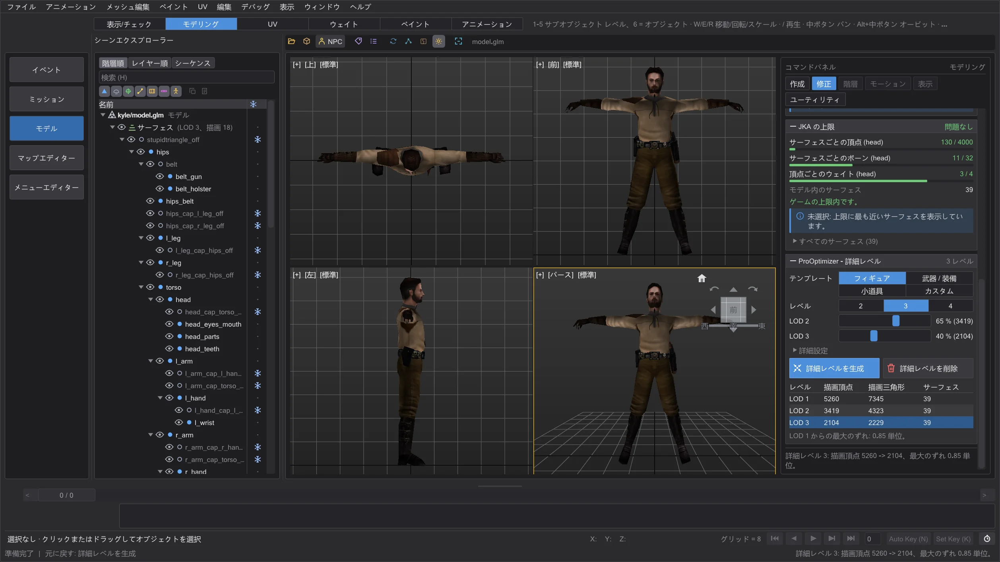
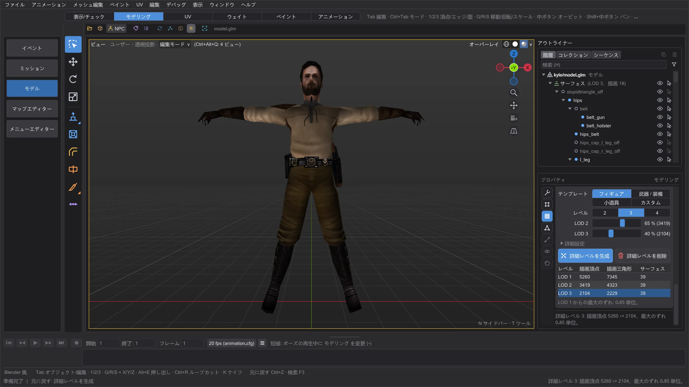
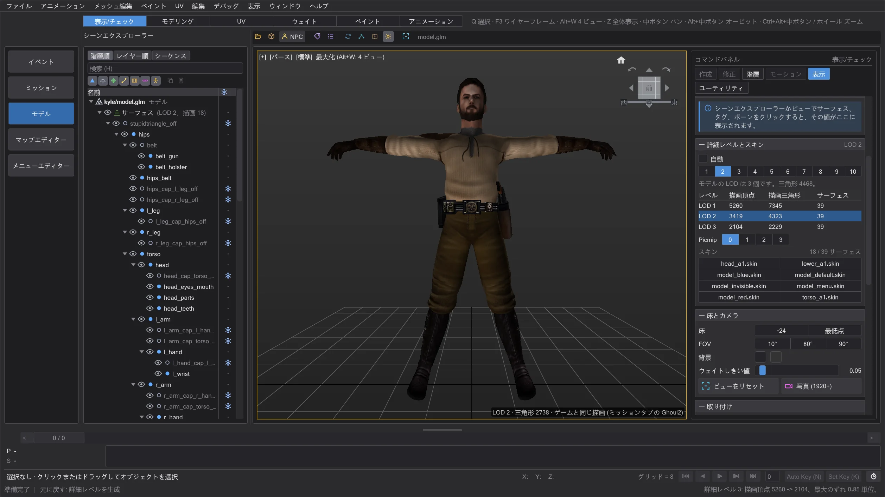
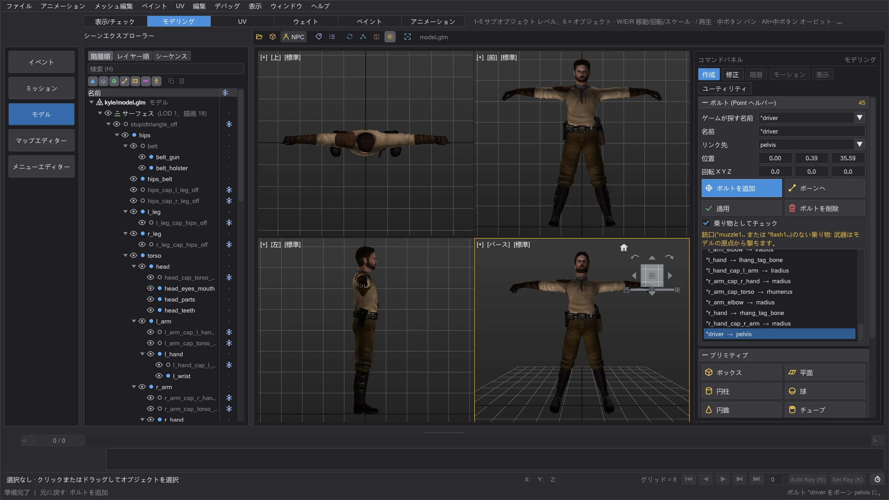
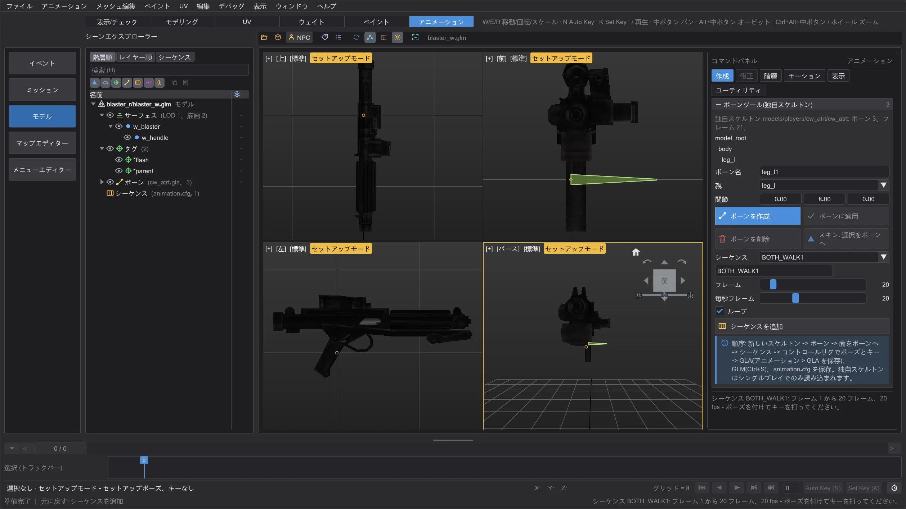

Model タブ: 詳細レベル、ボルト、独自スケルトン
ProOptimizer や Decimate のように LOD 2 と 3 を生成し、レベルごとの頂点数を見て、座席と銃口のボルトを追加し、乗り物のスケルトンを作ります。
詳細レベルを生成#
ゲームは遠くのモデルを粗い詳細レベルで描画します。モデリング 領域のグループ ProOptimizer - 詳細レベル(3ds Max 方式、修正 タブ)または Decimate - 詳細レベル(Blender 方式、モディファイアータブ)が LOD 1 からそれを作ります。テンプレート は各レベルが残す量を選びます - Jedi Academy のファイルで測定: フィギュア 0.65 / 0.40、武器と装備 0.55 / 0.30、小道具 0.75 / 0.50。レベル は 2、3、4(.md3 は最大 3)、スライダーはレベルごとの割合を目標頂点数付きで設定します。詳細レベルを生成 は元に戻す 1 回分です。その後ビューは最低レベルを表示し、表は各レベルの前後を示します - 行をクリックするとそのレベルを表示します。

粗いレベルの頂点はすべて LOD 1 の頂点です: 位置・法線・UV・ボーン・ウェイトはファイルのまま - .md3 は全フレームを保ち、.glm は頂点あたり最大 4 ウェイト・合計 1 のままです。面はまとめて簡略化されます: 2 つの面が接する所では辺が両方で同時に縮み、境界は閉じたままです。UV の継ぎ目は残ります。タグ(*name)、末尾が _off の面、_cap_ を含む面はどのレベルでもそのまま - キャップは切り口を閉じ続けます。各面はターゲットゲームの SHADER_MAX_VERTEXES 未満、.glm の最低レベルはその半分未満です(大きな面のステンシル影はそのレベルを使います)。.glm はレベルをファイル内に持ち、.md3 を保存すると横に name_1.md3 と name_2.md3 を書きます - 既にあれば上書きの前にプログラムが確認します。生成しなければ何も変わらず、保存は以前と同じバイトを書き、name_1/name_2 には触れません。

レベルごとの頂点数#
表示/チェック 領域のグループ 詳細レベルとスキン は各レベルの頂点・三角形・サーフェス数を示します。行のツールチップは最大のサーフェスと超えている上限を示します(赤: SHADER_MAX_VERTEXES 超過、黄: 最低レベルの影の上限、MD3_MAX_VERTS 4096、MD3_MAX_SURFACES 64)。ゲームの .md3 では横の name_1.md3 と name_2.md3 も数えます。レベルがないときはボタン 詳細レベルを生成 が上のグループを開きます。Clone Wars プロファイルでは、マップエディターの最適化ツールも、1 面の上限より頂点が多く _1.md3 のない実行時 .md3 と、_1.md3 のない _2.md3(ゲームはそこで止まります)を報告します。

座席と銃口のボルト#
モデリング 領域のグループ ボルト (Point ヘルパー)(3ds Max 方式)または ボルト (ボーンのエンプティ)(Blender 方式)は .glm にボルト面を追加します: 名前はゲームコードが問い合わせる名前の一覧から(乗り物 *driver、*droidunit、*muzzle1..、*exhaust1..; 据え置き砲 *seat、*flash01; 武器 *flash; フィギュアのタグ - ツールチップに OpenJK または Movie Duels のファイルと行)または独自のもの、従うボーン、位置と回転。ボルトを追加 は元に戻す 1 回分です。一覧のボルトをクリックすると欄が埋まり、適用 で適用します。ボルトは三角形 1 つの面として保存され、ゲームはそれをちょうどこの位置と回転として読みます。

乗り物としてチェック をオンにすると - チェックプロファイル Clone Wars チェーンでは常に - *driver がない(運転手がモデルの原点に座る)か、銃口がひとつもない(*muzzle1.. または *flash1..: 武器が原点から撃つ)ときにグループが警告します。
乗り物の独自スケルトン#
AT-RT や AT-TE のような歩行機やドロイドには独自スケルトンが必要です - フィギュアは _humanoid.gla のままで、そのボーンとアニメーションはゲーム全体で共有されます。アニメーション 領域のグループ ボーンツール(独自スケルトン)(3ds Max 方式、ボーンツールのように)または アーマチュア(独自スケルトン)(Blender 方式、編集モードのアーマチュアのように)は、他のプログラムなしで全工程をこなします:
- フォルダー名を付けて 新しいスケルトン を押すと、ボーン model_root を持つ models/players/<名前>/<名前> ができ、すべての面がそれに付きます。
- ボーンを作成 は名前・親・関節付きのボーンを追加します。一覧のボーンをクリックすると移動・名前変更・削除のために選べます。
- スキン: 選択をボーンへ は選んだ面を選んだボーンにリジッドに付けます - 乗り物の部品はそう動きます。細かいウェイトはどのフィギュアとも同じく Weights 領域で塗ります。
- シーケンスを追加 はスケルトンにフレームを、animation.cfg に ANIM_NAME 開始フレーム フレーム数 ループ fps の行を追加します。どのアニメーションとも同じくコントロールリグでポーズとキーを付け、.gla・.glm・animation.cfg を保存します。
